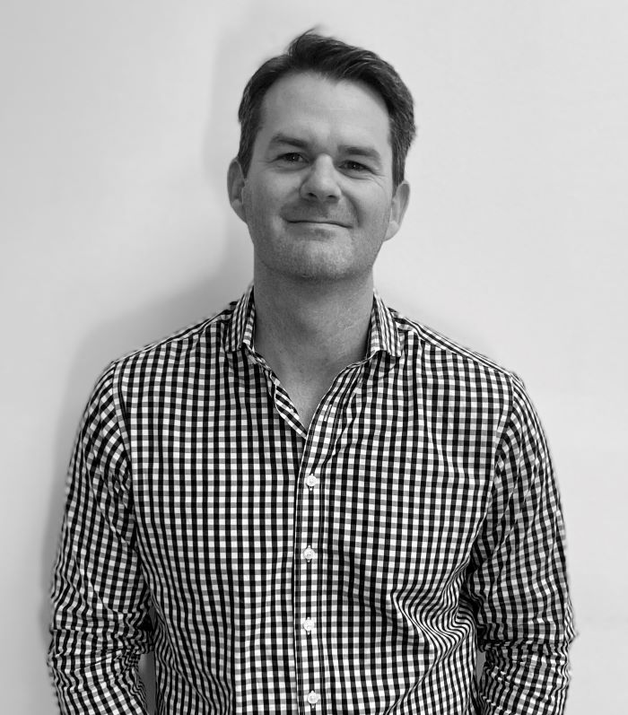
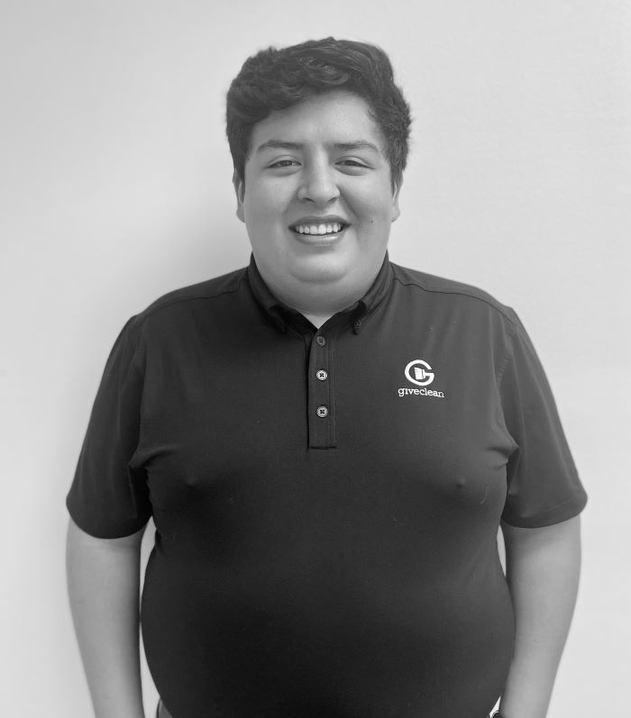

Call to action similar to your competitors right here. Let me know wording.
Meet Our Team

Joe Williams
Founder
Give Clean’s name says it all. We clean so we can give which is why it was formed. When I started it, we knew there was a need for a good honest commercial cleaning company that gives back but had no idea where God was going to take us. Our motto of cleaner facilities, stronger partnerships, and better communities is perfect. We strive to be the best in customer service which starts with how we help our cleaners thrive instead of just survive. We believe if we pour into them, our jobs are much easier. The short time we have been around has been a roller coaster but I wouldn’t have it any other way. We have an awesome leadership team who believes in what we are doing. I like to run pretty busy with overseeing multiple companies but the truth is my family and foundation are what drive me. I have been married for over 15 years and we are raising 3 wild but amazing boys. I enjoy discussing our foundation and how we can do great things all across the world, walking the occasional 9 holes, going to dinner with my bride and vacationing with the family. My favorite place is the mountains, there is nothing more peaceful for me than that.
Sam Taras
President
It is privilege to be a part of the Give Clean leadership team. As someone who was born and raised in a family restaurant business, I have always loved anything I can be a part of that is service oriented. My first job in the restaurant was washing dishes and from day one I loved the process of taking something dirty and facilitating the process to clean. Our “WHY”— to give, and the “HOW”— through cleaning, is what drew me to Give Clean. I am grateful to work alongside other leaders who have similar passions of positively impacting Memphis through cleaning and engaging with the different communities we have the privilege of working alongside. The community at Give Clean makes the everyday challenges all worth it! . I like to run pretty busy with overseeing multiple companies but the truth is my family and foundation are what drive me. I have been married for over 15 years and we are raising 3 wild but amazing boys. I enjoy discussing our foundation and how we can do great things all across the world, walking the occasional 9 holes, going to dinner with my bride and vacationing with the family. My favorite place is the mountains, there is nothing more peaceful for me than that.
Nathan Richardson
Vice President
It is my privilege to be a part of the leadership team here at Give Clean! Giving customers a great experience and coming alongside our employees to bring out the best in themselves is what I love. This balance of my position finds me in an optimal spot for coaching, trouble shooting, customer service and critical thinking. I am a Georgia guy but made my way to Ole Miss for college and managed to snag a Memphis gal as my wife. We lived in Nashville and had 3 kids there before we moved to the country of Panama, to serve on the mission field, working with a school and community for 6 years. Our twins were born there. When it was time to return to the States, we wanted to be a part of the change and growth Memphis offers, so we chose the 901! Our margin time is spent staying involved with folks through Fellowship Bible Church and on the soccer, field watching all 5 kids play! We have kids at Riverdale and ECS. I love serving as the chairman of the board for “For the Kingdom” in 38128 as well as serving with “Rio Missions” in Panama. Give Clean drew me as it is a team of good people looking to do good work, making a difference in lives both locally and internationally. Business with a purpose!

Tony Rapp
Director of Sales
Having spent the last 25 years in the cleaning industry selling chemicals and supplies, I’d say say I’m more than up for the exciting new challenge that serving as Director of Sales here at Give Clean affords me. I’m honored for the position to serve and look forward to providing for a cleaner environment as well as giving back to the community that’s surrounded me my entire life. I was born in Memphis and haven’t left it for most of my life. Having grown up in a music city, I have loved playing the drums professionally, and now as a hobby. I can still be seen around town playing once, or twice a month. My wife and I have 5 grown children, and as they have all flown the coop, I’m looking forward to nurturing Give Clean with the experience that the last few decades have taught me. It’s not often the opportunity comes around to have a job that is fulfilling, both professionally and personally, and I’m honored to have been made a part of this team.

Rogelio Duarte
Account Manager
Working at Give Clean has given the me the privilege to be apart of a leadership team that really cares about its people, and cares about the work that we are doing. I have lived in Memphis for the majority of my life and went to East Mississippi Community College in Starkville, MS. During college I met my wife while we were both serving at Service Over Self here in Memphis. After dating long-distance for two years she moved to Memphis and a year later we got married. We attend Second Presbyterian and are involved in the Nursery Program and Young Adults Sunday School. Give Clean came as the perfect opportunity for me not only to work with a great team of people but to serve the people, businesses and schools in our city.
.jpeg)
Moses
Supervisor
Bio not currently available for Moses
Caroline Berry
Office Manager
I was born and raised in Memphis, Tennessee and am a proud graduate of the University of Memphis. I have always been passionate about serving our city and giving back to the Memphis community. By serving with SOS as a part of the Summer Staff community for the past few years, I began to see how I could contribute to the change that I hope to see in our world. Give Clean’s intentional view of community and working in partnership with others is what ultimately drew me into the overall vision. I am encouraged to be working alongside a team that loves what they do and desires to provide the highest quality of service. When I am not working you could find me going for a run along the river, enjoying a quality cup of coffee, supporting the Grizzlies, or spending time with the people I love.
Kristen Williams
Owner
Bio not currently available for Kristen
Brandy Bagget
Vice President of Operations
Bio not currently available for Brandy